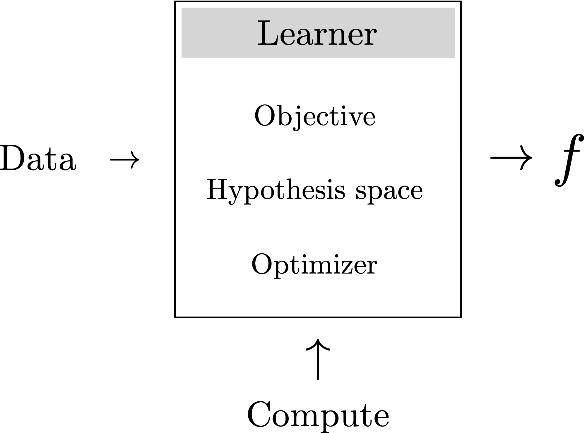
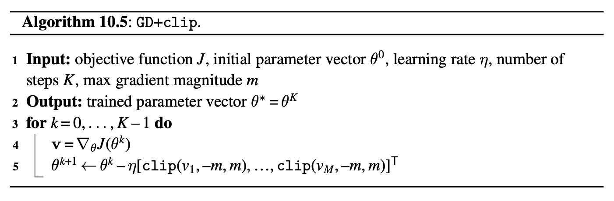

Goal
The goal of learning is to extract lessons from past experience in order to solve future problems.
Typically, this involves searching for an algorithm that solves past instances of the problem.
Note
Past and future do not necessarily refer to the calendar date; instead they refer to what the has previously seen and what the learner will see next.
Algorithm
Because learning is itself an algorithm, it can be understood as a meta-algorithm: an algorithm that outputs algorithms:
Figure 1: Learning is an algorithm that outputs algorithms.
Phases
Learning usually consists of two phases:
Example
Imagine you find an ancient mathematics text: \[\begin{aligned} 2 \star 3 &= 36\nonumber \\ 7 \star 1 &= 49\nonumber \\ 5 \star 2 &= 100\nonumber \\ 2 \star 2 &= 16\nonumber \end{aligned} \]
Question
What do you think \(\star\) represents?
Figure 2: How your brain may have solved the star problem.
Tip
This kind of learning, where you observe example input-output behavior and infer a functional mapping that explains this behavior, is called supervised learning.
Another name for this kind of learning is fitting a model to data.
Non-computability
Some things are not learnable from examples, such as noncomputable functions. An example of a noncomputable function is a function that takes as input a program and outputs a 1 if the program will eventually finish running, and a 0 if it will run forever.
Example - formal definition
A formal definition of example, is an {input, output} pair.
The examples you were given for \(\star\) consisted of four such pairs:
\[\begin{aligned} &\{\texttt{input:} [2,3], \texttt{output:} 36\}\nonumber \\ &\{\texttt{input:} [7,1], \texttt{output:} 49\}\nonumber \\ &\{\texttt{input:} [5,2], \texttt{output:} 100\}\nonumber \\ &\{\texttt{input:} [2,2], \texttt{output:}16\}\nonumber \end{aligned}\]
Figure 3: A complicated function that could be learned from examples.
Unsupervised learning
Learner has to come up with a model or representation of the input data that has useful properties, as measured by some objective function.
Reinforcement learning
We suppose that we are given an reward function: \[ r: \mathcal{Y} \rightarrow \mathbb{R}. \]
The learner tries to come up with a function that maximizes rewards.
Difference
Unsupervised learning has access to training data whereas reinforcement learning usually does not; instead the reinforcement learner has to collect its own training data.
Ingredients
What does it mean for the learner to succeed, or, at least, to perform well?
What is the set of possible mappings from inputs to outputs that we will search over?
How, exactly, do we search the hypothesis space for a specific mapping that maximizes the objective?

Learner’s algorithm
\[ f: \mathcal{X} \rightarrow \mathcal{Y}, \] Commonly, \(f\) is referred to as the learned function.
Learner’s objective
Function that scores model outputs: \[ \mathcal{L}: \mathcal{Y} \rightarrow \mathbb{R}, \] or function that compares model outputs to target answers: \[ \mathcal{L}: \mathcal{Y} \times \mathcal{Y} \rightarrow \mathbb{R}. \]
We will interchangeably call this \(\mathcal{L}\) either the objective function, the loss function, or the loss.
Description
The hypothesis space is a set \(\mathcal{F}\) of all the possible functions considered by the learner.
Examples:
Parameterization
We may say that our parameterized hypothesis space is \[ y = \theta_1 x + \theta_0m \] where \(\theta_0\) and \(\theta_1\) are the parameters.
This example corresponds to the space of affine functions from \(\mathbb{R} \rightarrow \mathbb{R}\).
Parameterization: another way
Another choice could be \[ y = \theta_2\theta_1 x + \theta_0, \] with parameters \(\theta_0\), \(\theta_1\), and \(\theta_2\): same space, but different parameterizations!
ERM model
Learn a function predicting \(\mathbf{y}\) from \(\mathbf{x}\) given many training examples \(\{\mathbf{x}^{(i)},\mathbf{y}^{(i)}\}^N_{i=1}\).
The idea is to minimize the average error (i.e., risk) we incur over all the training data (i.e., empirical distribution). The ERM problem is stated as follows:
\[ \begin{aligned} \mathop{\mathrm{arg\,min}}_{f \in \mathcal{F}} \frac{1}{N} \sum_{i=1}^N \mathcal{L}(f(\mathbf{x}^{(i)}),\mathbf{y}^{(i)}) \quad\triangleleft\quad \text{ERM} \end{aligned} \]
Here, \(\mathcal{F}\) is the hypothesis space, \(\mathcal{L}\) is the loss function, and \(\{\mathbf{x}^{(i)}, \mathbf{y}^{(i)}\}_{i=1}^N\) is the training data (example {input, output} pairs), and \(f\) is the learned function.
Probabilistic inference
We can interpret ERM as doing maximum likelihood probabilistic inference.
In this interpretation, we are trying to infer the hypothesis \(f\) that assigns the highest probability to the data.
For a model that predicts \(\mathbf{y}\) given \(\mathbf{x}\), the max likelihood \(f\) is:
\[\begin{aligned} \mathop{\mathrm{arg\,max}}_f p\big(\{\mathbf{y}^{(i)}\}_{i=1}^N \bigm | \{\mathbf{x}^{(i)}\}_{i=1}^N, f\big) \quad\quad \triangleleft \quad\text{Max likelihood learning} \end{aligned} \]
Probabilistic inference
The term \(p\big(\{\mathbf{y}^{(i)}\}_{i=1}^N \bigm | \{\mathbf{x}^{(i)}\}_{i=1}^N, f\big)\) is called the likelihood of the \(\mathbf{y}\) values given the model \(f\) and the observed \(\mathbf{x}\) values, and maximizing this quantity is called maximum likelihood learning.
MAP learning
When a prior \(p(f)\) is used in conjunction with a likelihood function, we arrive at maximum a posteriori learning (MAP learning), which infers the most probable hypothesis given the training data:
\[\begin{aligned} &\mathop{\mathrm{arg\,max}}_f p\big(f \bigm | \{\mathbf{x}^{(i)}, \mathbf{y}^{(i)}\}_{i=1}^N\big) \quad\quad \triangleleft \quad \text{MAP learning}\\ & = \mathop{\mathrm{arg\,max}}_f p\big(\{\mathbf{y}^{(i)}\}_{i=1}^N \bigm | \{\mathbf{x}^{(i)}\}_{i=1}^N, f\big)p\big(f\big) \quad\quad \triangleleft \quad \text{by Bayes' rule} \end{aligned}\]
Figure 4: The goal of learning is to use the training data to predict the \(y\) value of the test query. In our example we find that for every 1 degree increase in temperature, we can expect \(\sim 10\) more people to go to the beach.
Hypothesis space
The relationship between \(x\) and our predictions \(\hat{y}\) of \(y\) has the form \(\hat{y} = f_{\theta}(x) = \theta_1 x + \theta_0\).
Parameterization
This hypothesis space is parameterized by a two scalars, \(\theta_0, \theta_1 \in \mathbb{R}\), the intercept and slope of the line.
We denote \(\theta = [\theta_0, \theta_1]\).
Important
Learning consists of finding the value of these parameters that maximizes the objective.
Objective
Our objective is that \((\hat{y}^{(i)} - y^{(i)})^2\) should be small for all training examples \(\{x^{(i)}, y^{(i)}\}_{i=1}^N\). We call this objective the \(L_2\) loss:
\[\begin{aligned} J(\theta) &= \sum_i \mathcal{L}(\hat{y}^{(i)}, y^{(i)})\\ &\quad \mathcal{L}(\hat{y}, y) = (\hat{y} - y)^2 \quad\quad \triangleleft \quad L_2 \text{ loss} \end{aligned}\]
Note
\(J(\theta)\) will denote the total objective; \(\mathcal{L}\) will denote the loss per datapoint. That is \[ J(\theta) = \sum_{i=1}^N \mathcal{L}(f_{\theta}(x^{(i)}), y^{(i)}). \]
Problem statement
The full learning problem is as follows: \[\begin{aligned} \theta^* = \mathop{\mathrm{arg\,min}}_{\theta} \sum_{i=1}^N (\theta_1 x^{(i)} + \theta_0 - y^{(i)})^2. \end{aligned} \]
Random solution?
A first idea might be “try a bunch of random values for \(\theta\) and return the one that maximizes the objective.”
Will be slow!
Calculus way
We are trying to find the minimum of the objective \(J(\theta)\):
\[\begin{aligned} J(\theta) = \sum_{i=1}^N (\theta_1 x^{(i)} + \theta_0 - y^{(i)})^2. \end{aligned}\]
This function can be rewritten as \[\begin{aligned} J(\theta) = (\mathbf{y} - \mathbf{X}\theta)^\mathsf{T}(\mathbf{y} - \mathbf{X}\theta), \end{aligned} \] \[\begin{aligned} \mathbf{X} = \begin{bmatrix} 1 & x^{(1)} \\ 1 & x^{(2)} \\ \vdots & \vdots \\ 1 & x^{(N)} \end{bmatrix} \quad \mathbf{y} = \begin{bmatrix} y^{(1)} \\ y^{(2)} \\ \vdots \\ y^{(N)} \end{bmatrix} \quad \theta = \begin{bmatrix} \theta_0 \\ \theta_1 \end{bmatrix}. \end{aligned}\]
Calculus way
The \(J\) is a quadratic form, which has a single global minimum where the derivative is zero, and no other points where the derivative is zero. The derivative is: \[\begin{aligned} \frac{\partial J(\theta)}{\partial \theta} = 2(\mathbf{X}^\mathsf{T}\mathbf{X} \theta - \mathbf{X}^\mathsf{T}\mathbf{y}). \end{aligned} \]
We set this derivative to zero and solve for \(\theta^*\): \[ \begin{aligned} &2(\mathbf{X}^\mathsf{T}\mathbf{X} \theta^* - \mathbf{X}^\mathsf{T}\mathbf{y}) = 0\\ &\mathbf{X}^\mathsf{T}\mathbf{X} \theta^* = \mathbf{X}^\mathsf{T}\mathbf{y}\\ &\theta^* = (\mathbf{X}^\mathsf{T}\mathbf{X})^{-1}\mathbf{X}^\mathsf{T}\mathbf{y}. \end{aligned} \]
Figure 5: The \(\theta^*\) defines the best fitting line to our data. A best fit line is a visualization of a function \(f_{\theta}\), that predicts the \(y\)-value for each input \(x\)-value.
Figure 6: Linear regression finds a line that predicts the training data’s \(y\)-values from its \(x\)-values.
Program induction
Program induction: one of the broadest classes of learning algorithm. In this setting, our hypothesis space may be all Python programs.
Figure 7: Linear regression finds a line that predicts the training data’s \(y\)-values from its \(x\)-values.
Figure 8: Python program induction finds a Python program that predicts the training data’s \(y\)-values from its \(x\)-values.
Definition
A common problem in computer vision is to recognize objects. Our input is an image \(\mathbf{x}\), and our target output is a class label \(\mathbf{y}\)
Figure 9: Image classification.
Input
\[\mathbf{x} \in \mathbb{R}^{H \times W \times 3}, \] where \(H\) is image height and \(W\) is image width.
Output
Let \(\mathbf{y}\) be a \(K\)-dimensional vector, for \(K\) possible classes, such that: \[ y_k = \begin{cases}1, \; \text{if} \; \mathbf{y} \; \text{represents class}\; k, \\ 0, \; \text{otherwise}\end{cases} \] This representation is called a one-hot code.
Goal
Learn a function \(f_{\theta}\) that output vectors \(\hat{\mathbf{y}}\) that match the one-hot codes, thereby correctly classifying the input images.
An example of one-hot codes for representing \(K\)=5 different classes.
Loss function - version 1
Perhaps we should minimize misclassifications? That would correspond to the so called 0-1 loss:
\[ \begin{aligned} \mathcal{L}(\hat{\mathbf{y}},\mathbf{y}) = \mathbb{1}(\hat{\mathbf{y}}\neq\mathbf{y}), \end{aligned} \] where \(\mathbb{1}\) is the indicator function that evaluates to 1 if and only if its argument is true, and 0 otherwise. Unfortunately, minimizing this loss is a discrete optimization problem, and it is NP-hard.
Loss function - version 2
Instead, people commonly use the cross-entropy loss, which is continuous and differentiable (making it easier to optimize): \[\begin{aligned} \mathcal{L}(\hat{\mathbf{y}},\mathbf{y}) = H(\mathbf{y}, \hat{\mathbf{y}}) = - \sum_{k=1}^K y_k \log \hat{y}_k \quad\quad \triangleleft \quad \text{cross-entropy loss} \end{aligned}\]
Interpretation
\(\hat{y}_k\) should represent the probability we think the image is an image of class \(k\). Under that interpretation, minimizing cross-entropy maximizes the log likelihood of the ground truth observation \(\mathbf{y}\) under our model’s prediction \(\hat{\mathbf{y}}\). \(\hat{y}\) should represent a pmf.
Probability mass function (pmf)
A pmf \(\mathbf{p}\), over \(K\) classes, is defined as a \(K\)-dimensional vector with elements in the range \([0,1]\) that sums to 1. In other words, \(\mathbf{p}\) is a point on the \((K-1)\)-simplex, which we denote as \(\mathbf{p} \in \vartriangle^{K-1}\).
Procedure
To ensure that the output of our learned function \(f_{\theta}\) has this property, i.e., \(f_{\theta} \in \vartriangle^{K-1}\), we can compose two steps:
Squashing
A popular way to squash is via the softmax function:
\[\begin{aligned} &\mathbf{z} = z_{\theta}(\mathbf{x})\\ &\hat{\mathbf{y}} = \texttt{softmax}(\mathbf{z})\\ &\quad \quad \hat{y}_j = \frac{e^{-z_j}}{\sum_{i=1}^K e^{-z_k}}. \end{aligned}\]
The values in \(\mathbf{z}\) are called the logits.
Note
Now we have:
\[\begin{aligned} \hat{\mathbf{y}} = f_{\theta}(\mathbf{x}) = \texttt{softmax}(z_{\theta}(\mathbf{x})) \end{aligned}\]
Figure 10: Softmax regression for image classification.
Figure 11: Learning is a meta-algorithm, an algorithm that outputs algorithms; metalearning is just learning applied to learning, and therefore it is a meta-meta-algorithm.
Metalearning
It’s a special case of learning where the hypothesis space is learning algorithms.
The goal of metalearning is to handle the case where the future problem we will encounter is itself a learning problem.
Example
Suppose that we are given the following {input, output} examples:
\[\begin{aligned} &\{\texttt{input:} \big(x:[1,2], y:[1,2]\big), &&\texttt{output:} y = x\}\nonumber \\ &\{\texttt{input:} \big(x:[1,2], y:[2,4]\big), &&\texttt{output:} y = 2x\}\nonumber \\ &\{\texttt{input:} \big(x:[1,2], y:[0.5,1]\big), &&\texttt{output:} y = \frac{x}{2}\}\nonumber \end{aligned}\]
The learner can fit these examples by learning to perform least-squares regression.
Figure 12: Learning is a meta-algorithm, an algorithm that outputs algorithms; metalearning is learning applied to learning: a meta-meta-algorithm.
Recursion
Notice that you can apply this idea recursively, constructing meta-meta-...-metalearners.
Humans perform at least three levels of this process, if not more: we have evolved to be taught in school how to learn quickly on our own.
Setting
We consider the task of minimizing a cost function \(J: \cdot \rightarrow \mathbb{R}\), which is a function that maps some arbitrary input to a scalar cost.
In learning problems, the domain of \(J\) is the training data and the parameters \(\theta\). We will often consider the training data to be fixed and only denote the objective as a function of the parameters, \(J(\theta)\). Our goal is to solve: \[ \theta^* = \arg\min_{\theta} J(\theta) \]
Figure 13: General optimization loop.
Zeroth-order optimization
The update function only gets to observe the value \(J(\theta)\). The only way, then, to find \(\theta\)’s that minimize the loss is to sample different values for \(\theta\) and move toward the values that are lower.
First-order optimization
Also called gradient-based optimization: the update function takes as input the gradient of the cost with respect to the parameters at the current operating point, \(\nabla_{\theta}J(\theta)\). This reveals the direction.
Gradient descent GD. Optimizing a cost function \(J: \theta \rightarrow \mathbb{R}\) by descending the gradient \(\nabla_{\theta} J\).
Hyperparameters
If the learning rate is sufficiently small and the initial parameter vector \(\theta^0\) is random, then this algorithm will almost surely converge to a local minimum of \(J\) as \(K \rightarrow \infty\).
Learning Rate Schedules
We are calling some function \(\texttt{lr}(\eta^0,k)\) to get the learning rate on each iteration of descent: \[ \eta^{k} = \texttt{lr}(\eta^0,k) \] Generally, we want an update rule where \(\eta^{k+1} < \eta^k\) (making smaller steps).
Examples
\[ \begin{aligned} \texttt{lr}(\eta^0,k) &= \beta^{-k} \eta^0 &\quad\quad \triangleleft\quad \text{exponential decay}\\ \texttt{lr}(\eta^0,k) &= \beta^{-\lfloor k/M \rfloor} \eta^0 &\quad\quad \triangleleft\quad \text{stepwise exponential decay}\\ \texttt{lr}(\eta^0,k) &= \frac{(K - k)}{K} \eta^0 &\quad\quad \triangleleft\quad \text{linear decay} \end{aligned} \]
Gradient descent with learning rate decay algorithm.
Momentum
Momentum means that we set the parameter update to be a direction \(\mathbf{v}^{k+1}\), given by a weighted combination of the previous update direction, \(\mathbf{v}^{k}\), plus the current negative gradient: \[ \mathbf{v}^{k+1} = \mu \mathbf{v}^{k} - \eta\nabla_{\theta} J(\theta^k) \] The weight \(\mu\) in this combination is a new hyperparameter, sometimes simply called the momentum.
Gradient descent with momentum algorithm.
Figure 14: (left) A simple loss function \(J = \texttt{abs}(\theta)\). (right) Optimization trajectory for three different settings of momentum \(\mu\). White line indicates value of the parameter at each iteration of optimization, starting at top and progressing to bottom. Color is value of the loss. Red dot is location where loss first reaches within \(0.01\) of optimal value.
Figure 15
Alternatives
What are some other good choices for \(\mathbf{v}\)?
One common idea is to set \(\mathbf{v}\) to be the gradient of a surrogate loss function, which is a function, \(J_{\texttt{surr}}\), with meaningful (non-zero) gradients that approximates \(J\). An example might be a smoothed version of \(J\).
Another way to get \(\mathbf{v}\) is to compute it by sampling perturbations of \(\theta\), and seeing which perturbation leads to lower loss. In this strategy, we evaluate \(J(\theta+\epsilon)\) for a set of perturbations \(\epsilon\), then move toward the \(\epsilon\)’s that decreased the loss. Approaches of this kind are sometimes called evolution strategies.
Evolution strategy algorithm.
Figure 16: Using evolution strategies to minimize a nondifferentiable (zero-gradient) loss, using \(\sigma=1\), \(M=10\), and \(\eta=0.02\).
Gradient Clipping

Note
clip is the “clipping” function: \(\texttt{clip}(v, -m, m) = \max(\min(v,m),-m)\)
Gradient Clipping
GD with clipping to minimize a loss with exploding gradients, using \(m=0.1\).
Expensive computation
For typical learning problems, \(\nabla_{\theta} J(\theta, \{\mathbf{x}^{(i)}, \mathbf{y}^{(i)}\}_{i=1}^N)\) decomposes as follows: \[ \begin{align} \nabla_{\theta} J(\theta, \{\mathbf{x}^{(i)}, \mathbf{y}^{(i)}\}_{i=1}^N) &= \nabla_{\theta} \frac{1}{N}\sum_{i=1}^N \mathcal{L}(f_{\theta}(\mathbf{x}^{(i)}), \mathbf{y}^{(i)}) = \frac{1}{N}\sum_{i=1}^N \nabla_{\theta} \mathcal{L}(f_{\theta}(\mathbf{x}^{(i)}), \mathbf{y}^{(i)}) \end{align} \]
Batching
Suppose instead we randomly subsample a batch of terms from this sum, \(\{\mathbf{x}^{(b)}, \mathbf{y}^{(b)}\}_{b=1}^B\), where \(B\) is the batch size. We then compute an estimate of the total gradient as the average gradient over this batch as follows: \[ \begin{align} \tilde{\mathbf{g}} = \frac{1}{N}\sum_{b=1}^B \nabla_{\theta} \mathcal{L}(f_{\theta}(\mathbf{x}^{(b)}), \mathbf{y}^{(b)}) \end{align} \]
Stochastic gradient descent algorithm. Stochastic gradient descent estimates the gradient from a stochastic subset (batch) of the full training data, and makes an update on that basis.
Properties
Train vs test
So far, we have described learning as an optimization problem: maximize an objective over the training set. But this is not our actual goal. Our goal is to maximize the objective over the test set.
Overfitting
Happens when we fit to properties in the training data that do not exist in the test data.
This means that what we learned about the training data does not generalize to the test data.
Underfitting
Learner failed to optimize the objective on the training data.
Polynomial regression
The hypothesis space is polynomial functions rather than linear functions, that is, \[ \begin{aligned} y = f_{\theta}(x) = \sum_{k=0}^K \theta_k x^k \end{aligned} \]
where \(K\), the degree of the polynomial, is a hyperparameter of the hypothesis space.
Equivalence of polynomial and linear regression
Let us consider the setting where we use the least-squares (\(L_2\)) loss function.
We can see this by rewriting the polynomial as:
\[ \sum_{k=0}^K \theta_k x^k = \theta^\mathsf{T}\phi(x), \; \phi(x) = \begin{bmatrix} 1 \\ x \\ x^2 \\ \vdots \\ x^K \end{bmatrix} \]
Now the form of \(f_{\theta}\) is \(f_{\theta}(x) = \theta^\mathsf{T}\phi(x)\), which is a linear function in the parameters \(\theta\). Therefore, if we featurize \(x\), representing each datapoint \(x\) with a feature vector \(\phi(x)\), then we have arrived at a linear regression problem in this feature space.
Equivalence of polynomial and linear regression
So, the learning problem, and closed form optimizer, for \(L_2\) polynomial regression looks almost identical to that of \(L_2\) linear regression:
where \[\mathbf{\Phi} = \begin{bmatrix} 1 & x^{(1)} & x^{(1)^2} & ... & x^{(1)^K} \\ 1 & x^{(2)} & x^{(2)^2} & ... & x^{(2)^K} \\ \vdots & \vdots & \vdots & \vdots & \vdots \\ 1 & x^{(N)} & x^{(N)^2} & ... & x^{(N)^K} \\ \end{bmatrix}\]
The matrix \(\mathbf{\Phi}\) is an array of the features (columns) for each datapoint (rows). It plays the same role as data matrix \(\mathbf{X}\) did earlier; in fact we often call matrices of the feature representations of each datapoint also as a data matrix.
Figure 18: Underfitting and overfitting.
Data generating process
\[ \begin{aligned} Y &= X^2 + 1 &\triangleleft \quad\text{true underlying relationship}\\ \epsilon &\sim \mathcal{N}(0,1) &\triangleleft \quad\text{observation noise}\\ Y^\prime &= Y + \epsilon &\triangleleft \quad\text{noisy observations}\\ x,y &\sim p(X,Y^{\prime}) &\triangleleft \quad\text{data-generating process} \end{aligned} \]
Why does overfitting happen?
It’s because for \(K=10\) the curve can become wiggly enough to not just fit the true underlying relationship but also to fit the noise, the minor offsets \(\epsilon\) around the green line.
This noise is a property of the training data that does not generalize to the test data; the test data will have different observation noise.
Multiple hypotheses
For \(K=10\) there are many hypotheses (polynomial functions) that perfectly the data (true function + noise) – there is insufficient data for the objective to uniquely identify one of the hypotheses to be the best. Because of this, the hypothesis output by the optimizer may be an arbitrary one.
Approximation error
Let \(\{x_{(\texttt{train})}^{(i)}, y_{(\texttt{train})}^{(i)}\}_{i=1}^N\) be our training data set (the black points). Then the approximation error \(J_{\texttt{approx}}\) is defined as the total cost incurred on this training data:
\[\begin{aligned} J_{\texttt{approx}} = \frac{1}{N} \sum_{i=1}^N \mathcal{L}(f_{\theta}(x_{(\texttt{train})}^{(i)}), y_{(\texttt{train})}^{(i)}) \end{aligned}\] It is the gap between the black line and the training data points.
Generalization error
The expected cost we would incur if we sampled a new test point at random from the true data generating process. Generalization error is often approximated by measuring performance on a heldout , \(\{x_{(\texttt{val})}^{(i)}, y_{(\texttt{val})}^{(i)}\}_{i=1}^N\), which can simply be a subset of the data that we don’t use for training or testing:
\[\begin{aligned} J_{\texttt{gen}} &= \mathbb{E}_{x,y \sim p_{\texttt{data}}} [ \mathcal{L}(f_{\theta}(x), y)]\\ &\approx \frac{1}{N} \sum_{i=1}^N \mathcal{L}(f_{\theta}(x_{(\texttt{val})}^{(i)}), y_{(\texttt{val})}^{(i)}) \end{aligned}\] It is the gap between the black line and the green line.
Figure 19: Approximation error approx versus generalization error gen for polynomial regression of order \(K\). Here we measured error as the proportion of validation points that are mispredicted (defined as having an \(L_2\) prediction error greater than 0.25).
Goldilocks principle
We should prefer hypotheses (functions \(f\)) that are sufficiently expressive to fit the data, but not so flexible that they can overfit the data.
Regularization
Mechanisms that penalize function complexity so that we avoid learning too flexible a function that overfits. Regularizers embody the principle of Occam’s razor.
The general form of a regularized objective is: \[\begin{aligned} J(\theta) = \overbrace{\frac{1}{N} \sum^N_{i=1} \mathcal{L}(f_{\theta}(x)^{(i)}, y^{(i)})}^\text{data fit loss} + \underbrace{\lambda R(\theta)}_\text{regularizer} \quad\quad\triangleleft \quad\text{regularized objective function} \end{aligned} \qquad(1)\] where \(\lambda\) is a hyperparameter that controls the strength of the regularization.
Norm penalization
One of the most common regularizers is to penalize the \(L_p\) norm of the parameters of our model, \(\theta\): \[ R(\theta) = \left\lVert\theta\right\rVert_{p}. \]
The \(L_p\)-norm of \(\mathbf{x}\) is \((\sum_i |x_i|^{p})^{\frac{1}{p}}\). The \(L_2\)-norm is the familiar least-squares objective.
Regularizers as Probabilistic Priors
Regularizers can be interpreted as priors that prefer, a priori (before looking at the data), some solutions over others.
Under this interpretation, the data fit loss (e.g., \(L_2\) loss) is a likelihood function \(p(\{y^{(i)}\}^N_{i=1} \bigm | \{x^{(i)}\}^N_{i=1}, \theta)\) and the regularizer is a prior \(p(\theta)\).
Bayes’ rule then states that the posterior \(p(\theta \bigm | \{x^{(i)}, y^{(i)}\}^N_{i=1})\) is proportional to the product of the prior and the likelihood. The log posterior is then the sum of the log likelihood and the log prior, plus a constant.
Revisiting the \(\star\) Problem
\[\begin{aligned} 3 \star 2 &= 36\nonumber \\ 7 \star 1 &= 49\nonumber \\ 5 \star 2 &= 100\nonumber \\ 2 \star 2 &= 16\nonumber \end{aligned}\]
Three tools
data: observations of the world like photos and videos. Finding explanations consistent with the observed data is the centerpiece of learning-based vision.
priors (a.k.a. regularizers): prefer some solutions over others a priori.
Set of hypotheses under consideration for what the true function may be. The hypothesis space constrains which solutions we can possibly find.
Figure 20: A cartoon of the tools for honing in on the truth.
Experiment 1: Effect of Data
Consider the following empirical risk minimization problem: \[ \begin{aligned} J(\theta; \{x^{(i)}, y^{(i)}\}^N_{i=1}) &= \frac{1}{N}\sum_i \lvert f_{\theta}(x^{(i)}) - y^{(i)}\rvert^{0.25} \quad\quad \triangleleft \quad\text{objective}:error_fn_1\\ f_{\theta}(x) &= \theta_0 x + \theta_1 \sin(x) \quad\quad \triangleleft \quad\text{hypothesis space} \end{aligned} \qquad(2)\]
Figure 21: The more data you have, the less you need other modeling tools. .
Experiment 2: Effect of Priors
We will use a slightly different hypothesis space and objective function \[ \begin{aligned} J(\theta; \{x^{(i)}, y^{(i)}\}^N_{i=1}) &= \frac{1}{N}\sum_i \left\lVert f_{\theta}(x^{(i)}) - y^{(i)}\right\rVert_2^2 + \lambda \left\lVert\theta\right\rVert_2^2 \quad\quad \triangleleft \quad\text{objective}\\ f_{\theta}(x) &= \theta_0 x + \theta_1 x \quad\quad \triangleleft \quad\text{hypothesis space} \end{aligned} \]
Figure 22: More regularization, more (soft) constraints.
Experiment 2: Effect of Priors
You can take away a few lessons from this example:
Priors help only when they are good guesses as to the truth.
Overreliance on the prior means ignoring the data, and this is generally a bad thing.
For any given prior, there is a sweet spot where the strength is optimal. Sometimes this ideal strength can be derived from modeling assumptions and other times you may need to tune it as a hyperparameter.
Experiment 3: Effect of the Hypothesis Space
Consider the following three hypothesis spaces: \[ \begin{aligned} f_{\theta}(x) &= \theta_0 x + \theta_1 x^2 &\triangleleft \quad\texttt{quadratic}\\ f_{\theta}(x) &= \theta_0 x &\triangleleft \quad\texttt{linear}\\ f_{\theta}(x) &= 0 &\triangleleft \quad\texttt{constant} \end{aligned} \]
Figure 23: Fewer hypotheses, more (hard) constraints
General principle
What can be achieved with any one of our tools can also be achieved with any other.